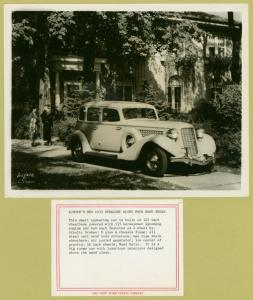
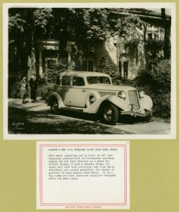
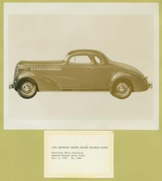
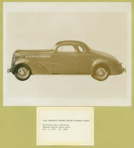
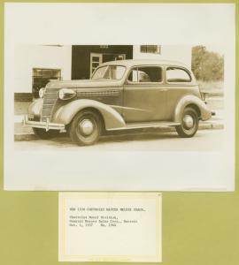
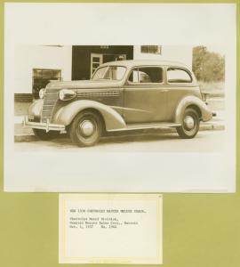

Cadillac. 1909 Cadillac Touring Model '30'.
Cadillac. 1909 Cadillac Touring Model '30'.
 

Auburn


Bantam.Collection of automobile photographs and news releases, 1877-1938


Ford phaeton.Collection of automobile photographs and news releases, 1877-1938.

 

 

1938 Chevrolet master deluxe town sedan.